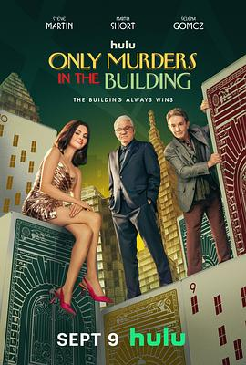

8.1
大楼里只有谋杀 第五季
Only Murders in the Building Season 5
2025
美国
评分 8.1
导演:
约翰·霍夫曼 / 詹米·巴比特 / 克里斯·科赫 / 唐·斯卡尔迪诺
演员:
史蒂夫·马丁 / 马丁·肖特 / 赛琳娜·戈麦斯 / 梅丽尔·斯特里普 / 蕾妮·齐薇格 / 罗根·勒曼 / 蒂娅·里欧妮
类型:
剧情,喜剧,悬疑,惊悚,犯罪
剧情简介
在这座充满秘密与奇闻的纽约公寓“大阿科尼亚”中，查尔斯（史蒂夫·马丁饰）、奥利弗（马丁·肖特饰）与梅布尔（赛琳娜·戈麦斯饰）这对出人意料的破案三人组，再次被卷入一场离奇案件。第五季的故事以一场意外死亡为开端——他们心爱的门卫莱斯特倒在电梯间里，警方断定这是场事故，但三人深知，阿科尼亚的大门从不简单地“关上”。随着播客节目重新启动，他们踏上新一轮调查，却意外触及纽约社会的隐秘阶层：从掌握地产命脉的亿万富翁，到老派黑帮的余党，再到神秘的“新阿科尼亚圈层”。旧城的裂缝与新权力的更替让这场谋杀案显得格外复杂。熟悉的讽刺与机智对白贯穿始终，但在幽默背后，这一季更加阴暗、尖锐，也更具情感深度。梅布尔一如既往地冷静睿智，她在独立与信任之间挣扎；查尔斯陷入对过往的反思，怀疑自己是否还适合继续这场“侦探游戏”；奥利弗的戏剧直觉再次成为破案关键，却也让他卷入新的麻烦。与此同时，新加盟的神秘女性（蕾妮·齐薇格饰）与一位过于聪明的年轻企业家（罗根·勒曼饰），为整个调查增添了更多悬念与幽默碰撞。本季延续了该系列标志性的黑色喜剧风格与舞台化叙事：每一集都像一出自嘲又紧凑的推理剧，充满转折、反讽与荒诞。导演通过交替的时空剪辑与多层叙述，让观众不断质疑“真相”与“故事”的边界。城市本身也成为一个角色——纽约在夜色下的光影与喧嚣，见证了真相被掩盖与揭露的全过程。《大楼里只有谋杀 第五季》不只是对前几季成功模式的延续，更是一次对“信任与怀疑”的主题再探讨。它依旧聪明、有趣、充满自嘲，却在结尾留下了比以往更深的余韵——关于孤独、老去与继续讲故事的意义。